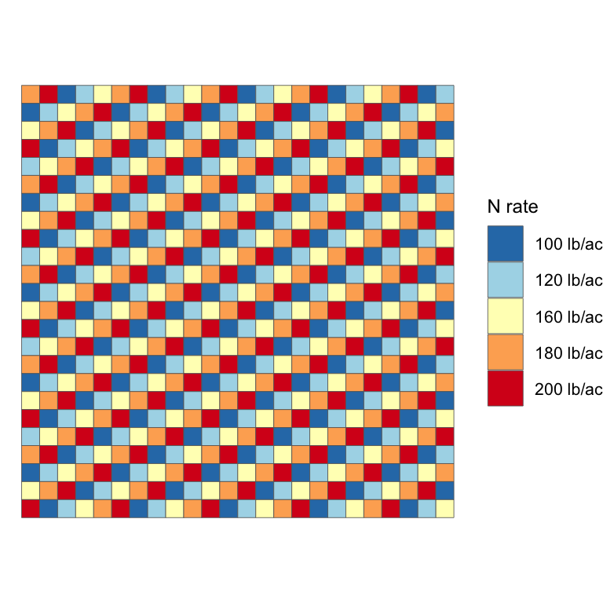
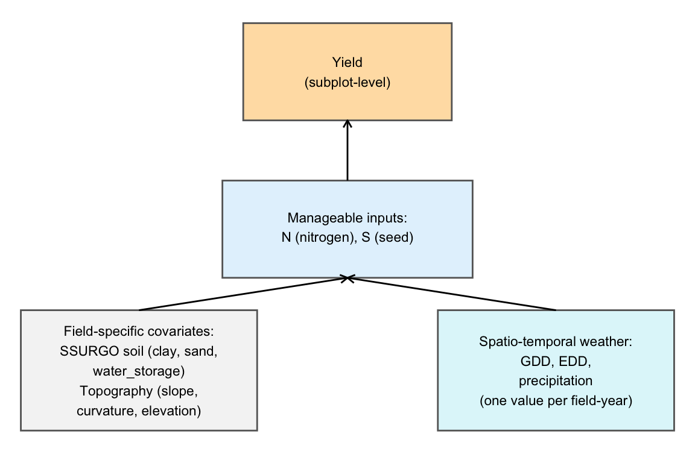
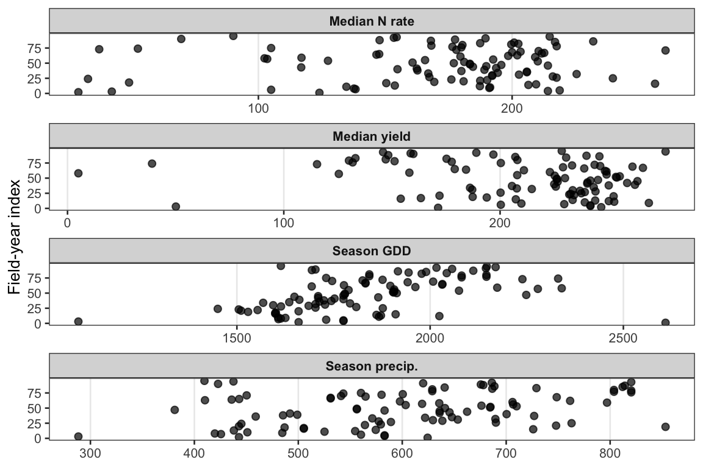

3 Data and Design
4 Data
OFPE Dataset
OFPEs are designed as full-field, variable-rate input trials that assign controllable inputs—such as nitrogen (N) and seed rate—using spatially independent designs. To avoid confounding effects from correlated field characteristics, this study follows the DIFM (Data-Intensive Farm Management) experimental protocol, which ensures that the two trial inputs (seed and nitrogen) are orthogonally applied across spatial subplots within each field (Li, Mieno, and Bullock 2021). This design minimizes spatial correlation between inputs and unobserved field characteristics, allowing for credible estimation of input-specific yield response functions. An illustration of the field-level nitrogen application design used in the OFPE trials is shown in Figure 4.1.
OFPE N-rate Design Map
The experimental units in an OFPE are polygonal subplots within a field, each receiving a unique combination of input rates. Trials are implemented using GPS-enabled tractors with variable-rate technology. During the growing season, data on input applications and environmental conditions are collected in real time, and yield data are recorded at harvest. Following collection, raw data are processed using DIFM protocols (Edge, Mieno, and Bullock 2024), which include cleaning for spatial misalignment, outlier removal, and exclusion of transition zones where input rates shift between plots. Input and yield values are then aggregated at the subplot level (using median values), and subplots with excessive deviation are removed to avoid contamination from spatial edge effects.

Field-specific characteristics are added by overlaying each experimental polygon with spatial soil data from the SSURGO database (clay, sand, silt, and water storage) and topographic features derived from Digital Elevation Models (DEM)—including slope, curvature, and elevation. Climate variables—such as total in-season precipitation, growing degree days (GDD), and extreme degree days (EDD)—are retrieved from the Daymet weather dataset (Thornton et al. 2022). These additions allow us to account for both spatial and temporal sources of heterogeneity in the estimation of yield–N response functions. The full dataset includes 169 field-year OFPEs collected from 42 farms across eight Midwestern states between 2016 and 2023. After quality control, 95 field-year datasets from 33 farms were retained for this study.
Across-Field Diversity in Yield, N, and Weather
To highlight the diversity of production environments represented in the OFPE dataset, we summarize each field-year by its median yield, median nitrogen rate, and growing-season weather conditions (precipitation, growing degree days, and extreme degree days) (see Figure 4.2,). Each point in the figure below corresponds to a field-year (identified by ffy_id), ordered within each panel by the value of the variable. The wide spread across these summaries illustrates substantial heterogeneity in both management (N rates) and weather (precipitation, GDD, EDD), motivating flexible modeling approaches that can adapt to different field-year conditions.

Edge, Brittani, Taro Mieno, and David S Bullock. 2024. “Processing of on-Farm Precision Experiment Data in the DIFM Project.” Center for Open Science.
Li, Xiaofei, Taro Mieno, and David S Bullock. 2021. “The Economic Performances of Different Trial Designs in on-Farm Precision Experimentation: A Monte Carlo Evaluation.” Working Paper.
Thornton, MM, R Shrestha, Y Wei, PE Thornton, S Kao, and BE Wilson. 2022. “Daymet: Monthly Climate Summaries on a 1-Km Grid for North America, Version 4 R1.” ORNL DAAC.